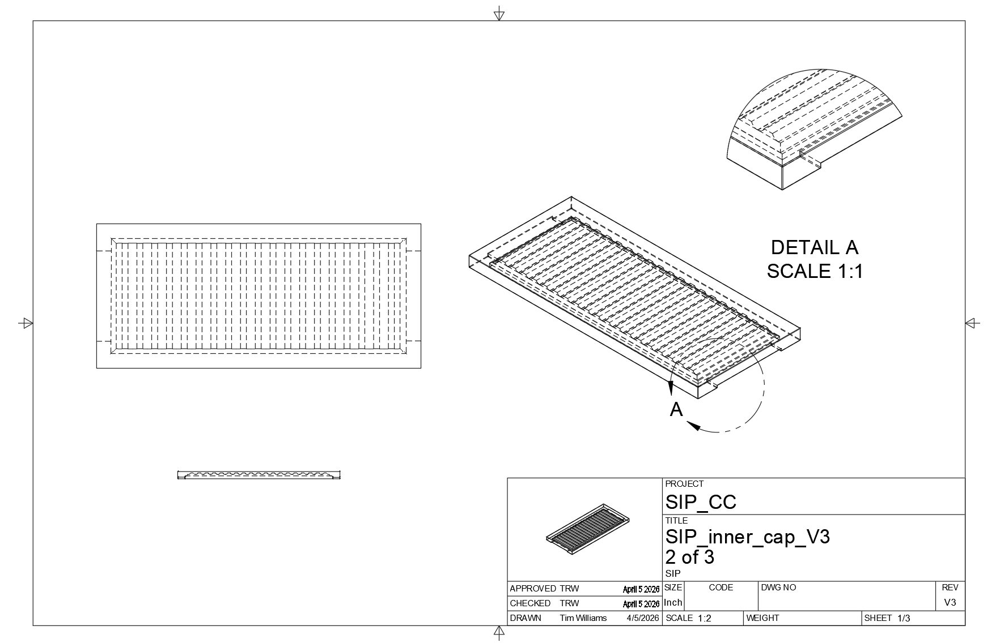

SIP: Project C2 — Capillary Canopy
Design Prototype • SIP311 & SIP408 • Progress • Testing • Revisions
Innovation Claim
Claim: Project C2 is innovative because it uses 3D-printed lid geometry rather than external equipment to create repeatable, tunable microclimates in small tanks. The design combines condensation routing, vent control, and an optional reservoir-fed wick system into a single modular lid manufactured from Fusion 360 models on a Bambu P1P.
Project Description
Project C2 explores how passive environmental control can be built directly into a terrarium lid. The goal is to use geometry, material behavior, and controlled water movement to support stable microclimates with less maintenance. The project focuses on sealed rim fitment, condensation routing, wick-fed moisture transfer, and biome-specific tuning for different enclosure conditions.
Status Updates:
March 4th: Prototype V1 printed and test setup
March 6th: Adjustments from V1 to V2 include internal spacing, gaps and alignment of vents
March 7th: Prototype V2 printed and test setup
March 18th: Adjustments from V2 include outer cap fit, vent placement
March 28th: V2 full print setup with water to assess evaporation
April 3rd: V2 minor adjustments to final fit
April 6th: V3 printed and final test for Arid Lid
Prototype Progress Timeline
Each milestone below documents design changes, observations, and next steps.
Prototype Revision 1 — Initial Fit Test

Figure 1. Inner lid that fits directly to commercial tank, used to check overall dimensions and tank fit.
This step focused on basic dimensions, fitment, and confirming that the lid seated correctly against the tank rim. The goal at this stage was not full environmental performance, but making sure the part physically worked before refining internal details.
- Focus: rim fit and overall dimensions
- Result: basic fit confirmed
- Issue found: internal geometry still too simple for reliable moisture routing
- Next step: make it less tupperware, more functional internal features
Prototype Revision 2 — Internal Geometry Update

Figure 2. Added internal cap to prototype with revised internal features.

Figure 3. V3 lips and path modified.
This revision introduced changes intended to improve moisture movement and direct condensation away from the front viewing area. The focus shifted from basic fit to functional environmental control.
- Focus: condensation routing and internal channel behavior
- Result: improved structure, but moisture flow still underperformed in V2
- Issue found: expected passive redistribution was weaker than planned
- Next step: continue refining internal slopes and return paths, add lips, guides for V3
Spring Break Testing — Observation Phase


Figure 4. Prototype observed over extended time to evaluate moisture behavior.
Over spring break, the system was left with more time to determine whether moisture movement would increase naturally as the enclosure stabilized. The expected increase did not happen, which showed that more geometry changes were still needed. All that happened was moisture clouded the glass and created an enviornment with no airflow or functional ventilation.
- Focus: passive moisture redistribution over time
- Result: system remained stable, but flow improvement was limited
- Issue found: moisture was not moving as aggressively as expected
- Next step: redesign internal surfaces to encourage better flow, moisture distrubution and collection
Current Prototype — Working Version

Figure 5. Current prototype installed and under evaluation.
The current version represents a functional intermediate prototype. It demonstrates the core concept, fits the tank, and supports ongoing testing, but it is still being refined before it can be considered a fully resolved design. I'd like to maximize the flow potential of the internal angles and possibly slow down or speed up release of water back into the enviornment based on needs.
- Focus: integrated system performance
- Result: working prototype with clear direction for refinement
- Issue found: moisture management still needs tuning
- Next step: update internal geometry and continue comparison testing
Wick Performance
Wick path and moisture transfer test. Biggest Fail
The wick system is intended to move water passively from the reservoir into the enclosure environment without pumps or active support systems. The pieces of wick that I have tested are not transfering water as I had hoped. While they do collect the water, they don't release it in a closed system because it essentially just stayes within that system, the wick just becomes permanently water logged.
Fitment and Seal

Fit and seal check against tank rim.
A reliable fit is critical because the lid must control evaporation and internal humidity before any moisture-routing features can work consistently. I have had no problems with fit since V1 and am confident that the lid components will fit my target tank.
CAD and Design
Inner Lid Schematic

Schematic of inner fit lid
Inner Lid Cap Schematic

Integrated wick path designed into the lid system.
Outer Lid Schematic(Pending)
Internal surfaces intended to guide water return.
Next Steps
- Refine internal geometry to improve moisture redistribution
- Continue testing condensation return behavior
- Document comparison between prototype revisions
- Finalize a cleaner and more repeatable working version